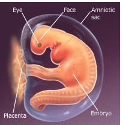

First trimester
.jpeg.png)
|
Your Pregnancy Week by Week, Weeks 1-4 Weeks 1 and 2, Baby, Your baby is still just a glimmer in your eye. It's difficult to know exactly when conception occurred, so doctors calculate your due date from the beginning of your last menstrual cycle. That's right -- for calculation purposes, you're “pregnant” before you even conceive! Mom-to-be, The lining of your uterus thickens to prepare for pregnancy. You may notice sticky vaginal discharge during ovulation. At the beginning of your period, about 20 eggs called ova occupy fluid-filled sacs called follicles. If you typically have your period every 28 days, then about 14 days later, you ovulate, One of these follicles releases one or two eggs, which travel down your fallopian tube to await fertilization. This time -- 14 days after your period started and a day or so longer -- is when you're the most fertile. (Note that if you just stopped taking birth control, you may ovulate sooner than expected.) If you want to get pregnant, this is the best time to try. Once the egg is fertilized -- 24 to 72 hours after ovulation -- it moves into the uterus. Don't be disappointed if you don't get pregnant the first time. Depending on their age, each month, a woman has a 25% chance of getting pregnant, so you may need to try more than once
Tip for the Week,Make sure you've scheduled a preconception visit with your OB-GYN to determine risks of genetic diseases and environmental hazards as well as learn about necessary lifestyle changes to ensure a healthy pregnancy and baby. Most important, make sure you've started taking 0.4 milligrams, or 400 micrograms, of folic acid a day. Folic acid taken a few months before conception has been shown to dramatically reduce such neural tube defects as spina bifida. Week 3,Baby, Congratulations! If your egg and your partner's sperm have joined successfully, your embryo is really there, although it's very small -- about the size of the head of a pin. It doesn't look like a fetus or baby; it's just a group of about 100 cells multiplying and growing rapidly. The outer layer of cells will become the placenta, and the inner layer will become the embryo. Mom-to-be, You won't notice any changes in your body at this point. Remember, you haven't even missed your period yet. But hormones are signaling your body to stop the menstruation process and support your pregnancy. Tip for the Week,Can't wait to find out? Take a home pregnancy test. They're about as reliable as a urine test or blood test done in the doctor's office -- and you get results immediately. To ensure accuracy, read the directions carefully and make sure all the supplies you use are clean. Week 4,Baby, Now that your egg is fertilized, it burrows into the lining of your uterus. This is called implantation. It may happen up to 4 days after fertilization. Mom-to-be, You're probably expecting your period this week, and if it doesn't occur, it might be one of the first signs that you're pregnant. You may also notice light spotting as the embryo implants itself in your uterus. The amniotic cavity, which will be filled with fluid, and the placenta, which will bring oxygen and nutrients to nourish your baby, are forming in your uterus. Your breasts might feel tender and swollen, or you might not feel any different yet. By the end of this week, a home pregnancy test may be positive. Tip for the WeekTry to eat healthfully, which means choosing a variety of foods from recommended food groups and drinking at least six to eight 8-ounce glasses of water a day. But you don't really need to "eat for two"; you only need an extra 300 calories per day while you're pregnant. And don't worry if your food intake drops in the beginning because of morning sickness. If you've been eating right already, your baby will get what it needs What's happening inside youThe fertilized egg grows, and a water-tight sac forms around it, gradually filling with fluid. This is called the amniotic sac, and it helps cushion the growing embryo. The placenta also develops. It is a round, flat organ that transfers nutrients from you to the baby and transfers the baby's wastes. A primitive face takes form with large dark circles for eyes. The mouth, lower jaw, and throat are developing. Blood cells are taking shape, and circulation will begin. By the end of the first month, your baby is about 1/4 inch long -- smaller than a grain of rice. |
 |
Week 5,Baby, Your baby is still tiny, but its heart, brain, spinal cord, muscle, and bones are beginning to develop. The placenta, which nourishes your baby, and the amniotic sac, which provides a warm and safe environment where your baby can move easily, are still forming, too. The umbilical cord forms and connects your baby to your blood supply. Chromosomes already determine your baby's hair, eye color, and sex
Week 6,Baby, Your baby is shaped like a tadpole, and it's about the size of a BB pellet. The eyes and limb buds are forming. The neural tube forms; it develops into the brain, spinal cord, and backbone. During an ultrasound, your doctor may be able to hear a heartbeat, and they can now set a due date. Between days 17 and 56 is a vulnerable time because that's when the baby is most susceptible to anything that can affect normal growth. Mom-to-be, You may have gained a few pounds by now. Or if you're having morning sickness you may have lost weight -- that's normal, too. You may start noticing some changes in your body, clothes getting a little tighter around your waist, fuller legs and breasts. With a pelvic exam, your doctor will notice a change in the size of your uterus. Ask about the signs of a UTI, which are more common in pregnancy. If you're having twins, you might find out this week.
Week 7,Baby, Your baby is growing. They're about the size of a pomegranate seed, 0.3 in. Limb buds appear that will grow into hands and feet. Many parts continue to develop, heart, lungs, intestines, appendix, brain, spinal cord, nostrils, mouth, and eyes. Mom-to-be, You're still not "showing," but by now you're really feeling the changes in your body. You may still have morning sickness, and your breasts probably still feel tingly and tender. Feeling exhausted is common in early pregnancy, so rest when you can.
Week 8,Baby, Your baby is now about in its sixth week of development. Your little bean is about as big as a coffee bean, 0.5 in. It's a big week for growth. Eyelid folds and ears are forming. Your baby develops little webbed fingers and toes and can even swim around in your womb. Their heart is beating 80 to 180 times per minute. Mom-to-be, Your blood volume is increasing, and your heart is pumping 50% more blood per minute for your baby. Common symptoms for this week are moodiness and queasiness from certain smells.
Baby: Your baby is about the size of a peanut: 0.70 inch. The head is more erect, and the neck is more developed. Your baby's skeleton is forming, but the bones are still soft. Little eyelids form but stay closed, and a nose appears. During an ultrasound, you might see how your baby moves, even though you can't feel it yet.
Mom-to-be: Your uterus is continuing to grow, and you may notice your waistline thickening. Unless you tell people your special news, however, your pregnancy still won't be noticeable to others. Pregnancy hormones slow digestion so your body absorbs more nutrients. This may lead to constipation or bloating. Hormones also relax the stomach and esophagus, which can cause heartburn. You probably won't have gained much weight yet.
Baby: Your baby is still small -- an inch long, about the size of a green olive -- but looks and acts like a baby. Arms and legs are longer and can bend at the elbows and knees. Fingers and toes become distinct.
Mom-to-be: Once the size of your fist, your uterus is now the size of a grapefruit. You still probably don't show much, but you may feel more comfortable in looser clothes. You may continue to feel tired and moody, but take heart: These symptoms shouldn't last too much longer.
Baby: It's another big growth week. Your baby is the size of a strawberry: 2 inches. When your doctor uses a Doppler stethoscope now, they can hear the rapid "swooshing" noises of the heartbeat. Little teeth buds appear in your baby's mouth. The intestines grow rapidly, pushing out into the umbilical cord. Your baby's genitals are developing, but the sex can't be determined yet by ultrasound.
Mom-to-be: Pregnancy hormones show their good and bad effects. You may notice that your hair, fingernails, and toenails are growing faster. But you may also notice oily skin and acne. Any nausea or vomiting should get better soon. You may still feel exhausted, even if you're able to get enough sleep.
Baby: Your baby is 2.5 inches long, about the size of a garlic bulb. All parts of your baby are developing, from tooth buds to toenails. There's now a recognizable profile, with a clear nose and chin. Your baby will keep developing and getting larger and stronger for the rest of your pregnancy. By the end of this week, the chance of miscarriage drops considerably.
Mom-to-be: You'll feel more energetic for the next few weeks. The typical weight gain by now is from 1.5 to 5 pounds. Extra melanin may make the skin on your eyelids, cheeks, and nose look brown. Increased blood flow may give your vulva a blue tint. Fathers-to-be might also have pregnancy symptoms, called couvade, or "hatching," during the third month and at delivery, including nausea, abdominal pain, appetite changes, and weight gain
The second trimester is, for many women, the easiest three months of pregnancy. Take the time now, while you're feeling better and your energy is up, to start planning for your baby's arrival. The second trimester is the middle three months of your pregnancy. This is a time when lots of women tell the world they're pregnant and begin to feel like the pregnancy is more 'real'.
Baby: Your baby is growing quickly! Eyes are moving into position, the ankles and wrists have formed, and though the head is still disproportionately big, the rest of the body is starting to catch up. This week, your baby's intestines are back inside where they belong. Your baby swallows amniotic fluid and absorbs it into their body. Baby's backbone can flex, making large movements easier. If you think you may be having twins, an ultrasound this week may confirm it!
Mom-to- be: You may have more energy and feel your best these next couple of months. Your uterus has grown a lot. It's filling your pelvis now and starting to grow upward into your abdomen. It probably feels like a soft, smooth ball. If you haven't gained any weight yet because of morning sickness, you'll begin to know as you start to feel better. You may feel a stretch in your belly as your round ligaments stretch. As you begin your 2nd trimester, your risk of miscarriage drops. If your gums swell and bleed from hormones, try a softer toothbrush.
Baby: Your baby's ears are shifting from the neck to the sides of the head, and the neck is getting longer and the chin more prominent. Facial features and unique fingerprints are all there. Your baby is beginning to respond to outside stimuli. If your abdomen is poked, the baby will try to wriggle away. The baby swallows amniotic fluid and passes it as urine. They still have room to float around your womb. Your baby's spleen will take over the development of red blood cells. From head to rump, your child is about the length of a bell pepper -- 3.5 inches.
Mom-to-be: You're probably wearing maternity clothes now. Your skin and muscles are starting to stretch to accommodate your growing baby. You may notice some constipation, because pregnancy hormones relax the bowel. You may salivate more. Tell your doctor if it's a problem. Small spider veins may appear on your legs or face. They will fade after delivery. Small spider veins may appear on your legs or face. They will fade after delivery
Baby: Your baby, from head to heel, is as long as a large russet potato -- 6.25 inches. They're covered by very fine hair, called lanugo, which is usually shed by birth. Eyebrows and hair on the top of the head are beginning to grow, bones are getting harder, and the baby may even be sucking their thumb. Their organs are fully formed now and will continue to grow. You may be able to tell the baby's sex this week with high-resolution ultrasound!
Mom-to-be: Your uterus can probably be felt about 3 to 4 inches below your navel. Sometime in the next five weeks you'll be offered a blood test called the quadruple marker screening test to help screen for Down syndrome. You can talk with your doctor about what prenatal tests you may want. If you're feeling better, you may be more interested in sex. You've probably gained about 15 lbs. on average. You'll start gaining more weight now -- about 1-2 lbs. a week.
Baby: You may be able to hear the baby's heartbeat in the doctor's office. Fine hair, lanugo, may be growing on the head. Arms and legs are moving, and the nervous system is working. Your baby can make slow eye movements behind still-closed eyelids. Your little one can move even more, flexing arms and legs! Bones harden; calcium makes them appear bright white on the ultrasound. Your baby, from head to heel, is the length of a carrot -- 7 inches.
Mom-to-be: Within the next few weeks, you may start to feel your baby move, called "quickening." It often feels like a gas bubble or subtle fluttering movement. As it happens more regularly, you'll know it's your baby. Your body is changing in many other ways. Increased blood volume to support your growing baby may produce nosebleeds, and you may notice your leg veins are becoming more apparent. Good news: Because your uterus is shifting, you may not have to urinate so much.
Baby: Your baby now has doubled in weight in the last two weeks. Fat begins to form, helping your baby's heat production and metabolism. The lungs are beginning to exhale amniotic fluid, and the circulatory and urinary systems are working. Hair on the head, eyebrows, and eyelashes are filling in. Your baby makes fists and puts their little hands to their mouth. Their heart beats strong, pumping 100 pints of blood a day. Your active little one is doing flips and rolling around! Head to heel, your little sprout is the length of an asparagus spear -- 7.75 inches.
Mom-to-be: You're showing more now, with a typical weight gain of 5-10 pounds. You may also be noticing that your appetite has grown. As your uterus grows, you may find it harder to sleep comfortably. You may start to feel your baby move if it's not your first pregnancy. Weight gain, swelling, and hormones can make your feet expand. You may have more energy and feel your best these next couple of weeks.
Baby: Your baby's rapid growth spurt is tapering off, but reflexes are kicking in. The baby can yawn, stretch, and make facial expressions, even frown. Taste buds are beginning to develop and can distinguish sweet from bitter. The baby will suck if its lips are stroked, and it can swallow and even get the hiccups. The retinas have become sensitive to light, so if a bright light is shined on your abdomen, your baby will probably move to shield its eyes. Little ears are working -- your baby can now hear sounds!
Mom-to-be: Your uterus, about the size of a cantaloupe, can probably be felt just below your navel. A mid-pregnancy ultrasound may be performed between now and 22 weeks to assess the baby's growth and development and to verify the due date. If the baby is in the right position, the ultrasound may show whether it's a boy or a girl. Your heart has to work 40% to 50% harder now to support your pregnancy. You may notice more low back pain, especially at the end of the day. Your doctor may do a vaginal ultrasound to check on your cervical length and the location of your placenta. You may notice a dark line running from your belly button to your pubic area. Circulation changes can make you feel dizzy, so stand up slowly.
Baby: Your baby's skin is developing and transparent, appearing red because blood vessels are visible through it. The main airways of your baby's lungs, called the bronchioles, begin to develop. A creamy white protective coating, called vernix, begins to develop on the baby's skin. The next 3 weeks are the best time to see your baby's parts with ultrasound. Your baby, from head to heel, is the same length as an eggplant -- 9.25 inches.
Mom-to-be: You may start to feel kicks, especially if this is not your first baby. As your baby continues to grow, you may be feeling some mid-pregnancy aches and pains by now -- lower abdominal achiness, dizziness, heartburn, constipation, leg cramps, mild swelling of ankles and feet, and a backache. Dilated blood vessels might cause tiny, temporary red marks (called spider nevi) on your face, shoulders, and arms. Swelling of your mucous membranes may cause congestion and nosebleeds. In most cases, your nausea and vomiting have tapered off.
Baby: Your baby can hear sounds by now -- your voice, heart, and your stomach growling, as well as sounds outside your body. The baby will cover its ears with its hands if a loud sound is made near you, and it may even become startled and "jump." The baby is moving often, too -- twisting, turning, wiggling, punching and kicking. If you're having twins, they're almost constantly stimulating each other to move. Your baby sleeps now and can be awakened by noise and movement. At this age, your baby loves to put feet and toes in their mouth! From head to heel, your baby is the length as a papaya -- 10 inches.
Mom-to-be: Congratulations! You're near the midpoint of your pregnancy. Your uterus is just about even with your navel. If you're having twins, it may be about an inch above that. Your waistline has pretty much disappeared. You have likely gained about 33% of your pregnancy weight. Bladder infections are more likely because certain muscles in the urinary tract relax. You may want to start Kegel exercises to help with bladder control. Your breathing will deepen and you may sweat more than usual because your thyroid gland is more active. Your blood volume may have increased 70% by now.
Hair is beginning to grow on your baby's head, and lanugo, a soft fine hair, covers their shoulders, back, and temples. This hair protects your baby and is usually shed at the end of the baby's first week of life, Your baby's skin is covered with a whitish coating called vernix caseosa. This "cheesy" substance, thought to protect baby's skin from long exposure to the amniotic fluid, is shed just before birth.
Baby: Your baby is steadily gaining fat to keep warm. Growth rate is slowing down, but its organs are still maturing. Your baby's oil glands are making a waxy film, called the vernix caseosa, that covers the skin to keep it supple in the amniotic fluid. Buds for permanent teeth are beginning to form. If your baby is a boy, their testes have formed but remain in their abdomen. Baby makes strong kicks and turns. From head to heel, your baby is about as long as a large butternut squash -- 10.5 inches.
Mom-to-be: Congratulations! This week begins the second half of your pregnancy. You're starting to show! You may notice stretch marks on your breasts or belly. Your uterus is starting to extend above your navel. You've probably gained 10-14 pounds by now.
Baby: Your baby's muscles are getting stronger every week now, and the eyelids and eyebrows are developed. Hair is also visible. Your baby moves a lot and responds to sound, rhythm, and melody. If you sing and talk to your baby now, those sounds may later soothe your newborn. If your baby is a girl, their ovaries have already formed. From head to heel, your baby is as long as an ear of corn -- 11 inches.
Mom-to-be: Your uterus is still growing, and you're probably feeling pretty good -- no more morning sickness. You may still be getting leg and foot cramps, though, and mild swelling of your ankles and feet. You may have heartburn more often as your uterus presses on your stomach. Finding it hard to stay cool? Blame it on pregnancy hormones! Your back, legs, and feet may ache from carrying pregnancy weight. Skin feel dry and itchy? Moisturizing your breasts and belly may help.
Baby: Your baby's skin is still wrinkled because your baby still has more weight to gain. Fine hair, called lanugo, on the body sometimes turns darker. Fingers and toes have fully formed -- they even have fingerprints! Baby may start hiccuping, causing jerking movements. At this stage, baby's skin is still wrinkled and translucent. Tip to toe, your baby is about as long as a head of romaine lettuce -- 12 inches.
Mom-to-be: You've probably gained about 12-15 pounds. While pregnant, you may notice an increase in vaginal secretions that are typically clear-to-yellowish with a faint smell. If the color or odor changes significantly, check in with your health care provider to see if you have an infection. Does the small of your back ache? Pain in your back and hips may increase as your ligaments loosen for birth. Lying down, getting massages, and applying a heating pad or hot water bottle to the area can help. You may need to pee less often now than in the first trimester.
Baby: This is the approximate age your baby can first survive outside the womb. Your baby is starting to make white blood cells, which will help it fight off disease and infection, and may respond to your touch or sounds. Your baby may startle when they hear loud sounds. If you haven't felt the baby hiccup yet, you might now. Your little one is as long and heavy as a pineapple -- 12.5 inches, 1.5 pounds.
Mom-to-be: Expect to gain about a pound per week this month. Your health care provider may test you for gestational diabetes between this week and 28 weeks. You may notice some mild cramping after sex or orgasm -- this is normal. As your belly continues to grow, you may feel a bit unbalanced when moving. Your heart rate may be higher now as your body works to pump more blood.
Baby: Your baby's skin now becomes opaque instead of transparent. The baby's body is still covered with folds, as it needs to grow into its skin. Heartbeat can be heard through a stethoscope or, depending on the position of the baby, by others putting an ear against your belly.
Mom-to-be: Besides your uterus growing upward, it may be getting bigger on your abdomen's sides. You may have hemorrhoids, caused by increased blood flow, constipation, indigestion, and heartburn. As your baby continues to grow, you'll start to feel more kicks and rolls. Your uterus is now about the size of a soccer ball. Your breasts are growing faster now than any other time in pregnancy.
By the end of the sixth month, your baby's finger and toe prints are visible. The eyelids begin to part and the eyes open.
A pregnancy lasts for about 40 weeks. The weeks are grouped into three trimesters. The third trimester includes weeks 26 through 40 of a pregnancy. The third trimester can be both physically and emotionally challenging for a pregnant woman. The baby is considered full term at the end of week 37 and it’s only a matter of time before the baby will be born. Researching and understanding what to expect during the third trimester can help reduce any anxiety you may have during the final stages of your pregnancy.
Baby: Your baby's hearing is fully developed. As the baby reacts to sounds, their pulse increases. Your baby will even move in rhythm to music. Lungs are still growing but are not yet mature. Patterns of your baby's brain waves appear like a full-term newborn. They also have patterns of sleeping and waking. Your baby knows how to suck now and may suck a thumb. As baby gains weight, you can see cute chubby cheeks on the ultrasound. Stretched out, your baby is as long as a leek -- 13.75 inches.
Mom-to-be: The baby's constant movements should be reassuring. You'll be putting on weight at the rate of about 1 pound per week now. You may be feeling some rib pain as your baby grows and pushes upward on your rib cage. The pressure may also be causing indigestion and heartburn. You may also feel stitch-like pains down the sides of your abdomen as your uterine muscle stretches. You may have more constipation now, as your uterus pushes on your rectum. Trouble sleeping? Try lying on your left side and using extra pillows.
Baby: Your baby's hands are active. Thumb-sucking calms the baby and strengthens cheek and jaw muscles. Your baby can cry now. From all that moving about, your baby has gained muscle tone. Baby's brain is no longer smooth and round; it's now folded, like an infant's. Head to heel, your baby is the length of an English cucumber -- 14.25 inches.
Mom-to-be: You may see stretch marks as your uterus continues to expand. Most women have gained about 16 to 22 pounds by now. Your balance and mobility also may be changing as you grow larger. Pressure on your sciatic nerve can cause lower back, hip, and leg pain. You may have Braxton Hicks contractions as your uterus prepares for birth. Talk with your doctor about the signs of preeclampsia. It might be your last chance to take childbirth classes.
Baby: Your baby measures about 10 inches from crown to rump, or a total length of about 15.75 inches from head to toe, and weighs about 2.4 pounds. Brain waves show rapid eye movement (REM) sleep, which means your baby may be dreaming. Eyelids are opening -- with eyelashes. Branches of lungs are developing. Toes catch up with fingers as toenails form. Your baby weighs slightly more than a large head of bok choy -- 2.5 pounds.
Mom-to-be: This week marks the beginning of your third trimester -- you're almost there! Ask your doctor about the signs of preterm labor. Your uterus extends well above your navel. As the baby gets bigger and stronger this month, you may be experiencing leg cramps and mild swelling of ankles and feet, difficulty sleeping, shortness of breath, lower abdominal achiness, clumsiness, or scattered Braxton Hicks contractions (hardening and relaxing of the uterus, like a rehearsal for labor). You may also be urinating more frequently again as the uterus continues to push on your bladder. Your baby's movements may begin to disturb your sleep. You may want to consider cord blood banking to store your baby's stem cells.
Baby: Your baby's eyes are almost always blue and can distinguish bright sunlight or artificial light through the uterine wall. The baby is performing fewer acrobatics as conditions in the womb become more cramped, but they're still doing a lot of kicking and stretching. As baby adds fat, baby's skin becomes smoother and more opaque. Baby's sweet smile first appears, especially during sleep. Your baby can kick, grasp, and stretch, and weighs nearly 3 pounds!
Mom-to-be: You've probably gained 19-25 pounds. You still have some time to go, so you may want to remind yourself of signs of premature labor, including menstrual-like cramps or lower back pain, a trickle of amniotic fluid, or a watery pinkish or brownish discharge preceded sometimes by the passage of a thick, gelatinous mucus plug. Tell your health care provider ASAP if that happens -- they can sometimes stop labor from progressing with bed rest, medications, and possibly also hospitalization. You may start having leg cramps, which can disturb your sleep. You might feel more discomfort as your uterus continues to push on your organs. As lungs have less room to expand, you could have some shortness of breath. The top of your uterus is now 5 inches or more above your belly button.
Baby: Your baby measures about 17 inches from head to toe and weighs about 3 pounds. Baby is growing plumper and beginning to control its own body temperature. Eyebrows and eyelashes are fully developed, and hair on the head is getting thicker. Head and body are now proportioned like a new born's. Hands are now fully formed and fingernails are growing. Baby's bone marrow takes over the job of producing red blood cells. Baby's eyes are working -- they open and close and respond to changes in light. From head to heel, your baby is as long as a bunch of collard greens -- 16 inches.
Mom-to-be: Your uterus is about 4 inches above your navel, and it may be hard to believe you still have about 10 weeks to go as the baby continues to push on your ribs. You may be feeling more discomfort in your pelvis and abdomen. Moving around may feel more challenging as your belly expands. Keep sex comfortable as your belly grows by trying different positions. You'll probably be gaining about a pound a week. Slower blood flow may cause itchy varicose veins on your legs or calves. You may have vivid or unusual dreams -- especially in the third trimester.
Your baby changes position frequently and responds to stimuli, including sound, pain, and light. At the end of the seventh month, fat begins to be deposited on your baby, The amniotic fluid begins to diminish.
Baby: Your baby can hear distinct sounds, including familiar voices and music. All major organ development is done, although the lungs are still immature. At this stage, your baby starts gaining weight rapidly. Measured from head to heel, your baby is as long as a stalk of rhubarb: 16.5 in.
Mom-to-be: Your uterus now fills a large part of your abdomen, and you've probably gained 21-27 pounds. Stretch marks may be more noticeable now, especially near your belly button. You're probably anticipating the birth -- it won't be long now.
Baby: Your baby measures about 18.9 inches long from head to toe and weighs almost 4 pounds. At this stage, they grow faster than ever. Baby fills almost all the space in your uterus now but may still have enough room to do somersaults. A layer of fat is forming under your baby's skin. The baby is practicing opening their eyes and breathing.
Mom-to-be: You may still be gaining 1 lb. a week. You'll probably start seeing your practitioner every 2 weeks until the last month, when you'll likely switch to weekly visits. You may continue to get backaches and leg cramps. You may also notice a yellowish fluid, called colostrum, leaking from your breasts -- it comes before milk production. Your sex drive might decrease as you move into your last weeks of pregnancy.
Baby: The next few weeks will mark lots of growth in the baby. The baby will gain more than half its birth weight in the next 7 weeks. Your baby's brain can now control its body temperature. It begins to move less now as it runs out of room -- at least eight movements every 2 hours that can be felt -- and curls up with knees bent, chin resting on chest, and arms and legs crossed. Baby likes to swallow and yawn.
Mom-to-be: You've probably gained 22 to 28 pounds by now. Of the pound a week you're gaining now, roughly half is going to your baby. Smaller meals could feel more comfortable as your uterus crowds your belly.
Baby: Your baby measures about 19.8 inches from head to toe and weighs about 5 pounds. They grow more baby fat, becoming plumper. The baby is probably settling into the head-down position, although it might not be final. Organs are now almost fully mature, except for lungs, and the skin is pink instead of red. Fingernails reach the ends of fingers, but toenails are not yet fully grown. The baby might have lots of hair and may not move as often, due to the tight fit.
Mom-to-be: Your uterus hardens and contracts as practice for labor, known as Braxton Hicks contractions, but you may not feel them yet. Your pelvis has expanded and may ache, especially at the back. The uterus is pushed hard against your lower ribs and your rib cage may be sore, and your navel is probably pushing out as a result of your abdomen being stretched.
By the end of these 4 weeks, your baby will weigh as much as 5 pounds. Your baby continues to mature and develop reserves of body fat. You may notice that your baby is kicking more. The baby's brain is developing rapidly at this time, and they can hear. Most internal systems are well developed, but the lungs may still be immature.
The most important advice for a woman who wants to get pregnant is to get to know her body.
If you're experiencing pregnancy symptoms, you're probably eager to know if you're actually pregnant whether you've been trying to get pregnant for months or your pregnancy symptoms came as a surprise.
You're pregnant, congratulations! The first weeks of your pregnancy are a vital time as your body gets busy building a baby. How exciting! .
Just as your body went through many changes before birth, it will go through transitions as you recover from childbirth.